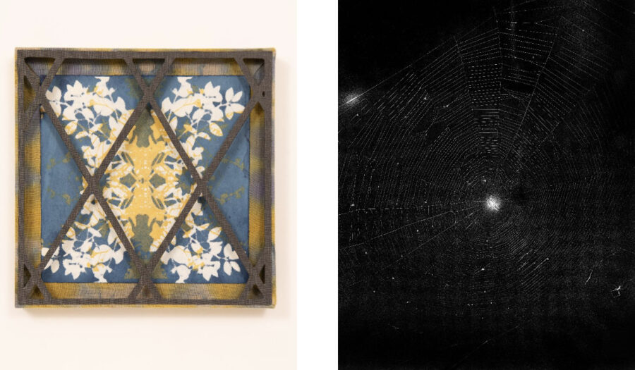

Jesse Ly & Maven Kennedy: Permeable Images
ACRE Projects is pleased to present Permeable Images, a two-person exhibition with work by Jesse Ly and Maven Kennedy. This exhibition captures the interconnection between the artists’ respective practices, which both situate similar concerns in the relationships between material and representative re-creation. Ly and Kennedy’s processes engage shifting perceptions while being tethered to reality – notating both what falls between as well as their individual relationships with the liminal.
What is present? – What shows through? – What is held behind? – What is not?
These in-betweens play into the absurdities and ambiguities of collective forms of seeing and the capabilities of peering deeper into these barriers and contradictories. In Permeable Images, Ly and Kennedy highlight the commonality within their distinctive approaches, engaging thresholds of world-building through modals of comprehension and connection.
In Kennedy’s work, shadows, rusty nails, architectural details, and stones from their time at ACRE are drawn, and screen-printed in natural dyes. They are then transformed into assemblages and installations that allow the viewer to look both at and through them; the imposed image and action of looking through the veil become part of the experience of looking.
Ly contrasts this with photographic rooted works that draw a tension between directness and ambiguity. Grounded in the perceptible and expanded in the emotive, they partner, group and connect their works through visual consistency and framing approaches to create an interplay between each work to expand the tethers to what they allow through. The pictorial indexes – occurred, made, and compiled create variance in what can be seen through and their reflexive properties. ***
Accessibility Information:
ACRE Projects is on the ground level with a 4-inch step to enter the building. The bathroom is wheelchair accessible. Masks are not required to enter the space but we do have masks available upon request. For additional information, please contact the gallery’s accessibility coordinator Lauren Leving at exhibitions@acreresidency.org.